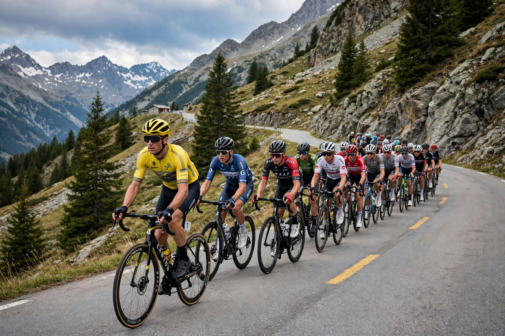

The Tour de France (French pronunciation: [tuʁ də fʁɑ̃s]) is an annual men's multiple-stage bicycle race held primarily in France. First organised in 1903 by the newspaper L'Auto to boost its circulation, it is now run by the Amaury Sport Organisation (ASO) and is the best known and most prestigious of cycling's Grand Tours, alongside the Giro d'Italia and the Vuelta a España. The race usually lasts 23 days: 21 day-long stages over some 3,500 kilometres (2,200 miles), finishing on the Champs-Élysées in Paris.

| Tour de France | |
|---|---|
| Race details | |
| First edition | 1903 |
| Editions | 112 (as of 2025) |
| Organiser | Amaury Sport Organisation (ASO) |
| Most wins | Jacques Anquetil, Eddy Merckx, Bernard Hinault, Miguel Induráin (5 each) |
| First winner | Maurice Garin (1903) |
Twenty-two teams of eight riders compete. Most stages are mass-start road races; the route mixes flat sprinter stages, high-mountain stages in the Pyrenees and Alps — with famous climbs such as Alpe d'Huez, the Col du Tourmalet and Mont Ventoux — and individual or team time trials. The overall winner is the rider with the lowest cumulative time, wearing the yellow jersey (maillot jaune, introduced in 1919). Subsidiary competitions include the points classification (green jersey), the mountains classification (polka-dot jersey), and the best young rider (white jersey).
The Tour grew from a publicity scheme by Henri Desgrange, editor of L'Auto; the first race in July 1903 covered 2,428 km in six stages and was won by Maurice Garin. The race was suspended during both World Wars. Post-war champions include Fausto Coppi, and five-time winners Jacques Anquetil, Eddy Merckx, Bernard Hinault and Miguel Induráin. Lance Armstrong's seven consecutive wins (1999–2005) were stripped in 2012 after a doping investigation, leaving those editions without a winner. In the 2020s the race has been dominated by Tadej Pogačar and Jonas Vingegaard. A women's event, the Tour de France Femmes, was relaunched in 2022.
The Tour has been repeatedly shaken by doping scandals, from the death of Tom Simpson on Mont Ventoux in 1967, through the Festina affair of 1998 and the EPO era, to the Armstrong case. Anti-doping controls are now overseen by the International Testing Agency, and the biological passport monitors riders year-round.
The Tour is among the world's most-watched annual sporting events, drawing millions of roadside spectators and a global television audience. Its caravan of sponsor vehicles, mountain-top finishes and Paris finale have made it a symbol of French summer.
Giro d'Italia · Vuelta a España · Grand Tour (cycling) · Yellow jersey · Tom Simpson
From Wikipedia, the free encyclopedia.